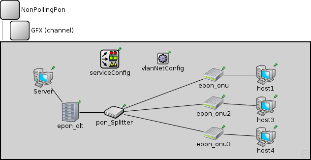
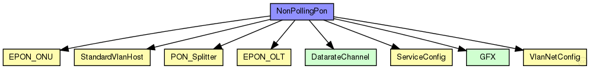
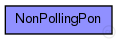

This documentation is released under the Creative Commons license
This documentation is released under the Creative Commons license(no description)
The following diagram shows usage relationships between types. Unresolved types are missing from the diagram. 
The following diagram shows inheritance relationships for this type. Unresolved types are missing from the diagram. 
| Name | Value | Description |
|---|---|---|
| isNetwork | ||
| display | bgl=3 |
| Name | Type | Default value | Description |
|---|---|---|---|
| pon_Splitter.haltOn | int | 10 | |
| epon_onu.onu_port.epon_mac.address | string | "auto" |
MAC address as hex string (12 hex digits), or "auto". "auto" values will be replaced by a generated MAC address in init stage 0. |
| epon_onu.onu_port.epon_mac.txQueueLimit | int | 2 |
maximum number of frames queued up for transmission; additional frames are dropped. Only used if queueModule=="" The 2nd frame is used in case of changing registers with MPCP ... sometimes 1 is already transmitted and the next MPCP decides to transmitt again with the new times. |
| epon_onu.onu_port.epon_mac.queueModule | string | "" |
name of optional external queue module |
| epon_onu.onu_port.epon_mac.mtu | int | 1500 | |
| epon_onu.onu_port.onu_Q_mgmt.regTimeOut | int | ||
| epon_onu.onu_port.onu_Q_mgmt.queueLimit | int | ||
| epon_onu.onu_port.onu_Q_mgmt.statsGranularity | double | ||
| epon_onu.epon_ONU_relay.addressTableFile | string | ||
| epon_onu.epon_ONU_relay.addressTableSize | int | ||
| epon_onu.epon_ONU_relay.agingTime | double | ||
| epon_onu.mac.address | string | "auto" |
MAC address as hex string (12 hex digits), or "auto". "auto" values will be replaced by a generated MAC address in init stage 0. |
| epon_onu.mac.txrate | double | 100Mbps |
maximum data rate supported by this station (bit/s); actually chosen speed may be lower due to auto- configuration. 0 means fully auto-configured. |
| epon_onu.mac.duplexEnabled | bool | true |
whether duplex mode can be enabled or not; whether MAC will actually use duplex mode depends on the result of the auto-configuration process (duplex is only possible with DTE-to-DTE connection). |
| epon_onu.mac.txQueueLimit | int | 1000 |
maximum number of frames queued up for transmission; additional frames are dropped. Only used if queueModule=="" |
| epon_onu.mac.queueModule | string | "" |
name of optional external queue module |
| epon_onu.mac.mtu | int | 1500 | |
| host1.tcp.advertisedWindow | int | 14*this.mss |
in bytes, corresponds with the maximal receiver buffer capacity (Note: normally, NIC queues should be at least this size) |
| host1.tcp.delayedAcksEnabled | bool | false |
delayed ACKs enabled/disabled |
| host1.tcp.nagleEnabled | bool | true |
Nagle's algorithm (RFC 896) enabled/disabled |
| host1.tcp.limitedTransmitEnabled | bool | false |
Limited Transmit algorithm (RFC 3042) enabled/disabled (can be used for TCPReno/TCPTahoe/TCPNewReno/TCPNoCongestionControl) |
| host1.tcp.increasedIWEnabled | bool | false |
Increased Initial Window (RFC 3390) enabled/disabled |
| host1.tcp.sackSupport | bool | false |
Selective Acknowledgment (RFC 2018, 2883, 3517) support (header option) (SACK will be enabled for a connection if both endpoints support it) |
| host1.tcp.mss | int | 536 |
maximum segment size (header option) |
| host1.tcp.tcpAlgorithmClass | string | "TCPReno" |
TCPReno/TCPTahoe/TCPNewReno/TCPNoCongestionControl/DumbTCP |
| host1.tcp.sendQueueClass | string | "TCPVirtualDataSendQueue" |
TCPVirtualDataSendQueue/TCPMsgBasedSendQueue |
| host1.tcp.receiveQueueClass | string | "TCPVirtualDataRcvQueue" |
TCPVirtualDataRcvQueue/TCPMsgBasedRcvQueue |
| host1.tcp.recordStats | bool | true |
recording of seqNum etc. into output vectors enabled/disabled |
| host1.sctp.numGapReports | int | 3 |
====== SCTP Association Parameters ================================= |
| host1.sctp.rtoInitial | double | 3s | |
| host1.sctp.rtoMin | double | 1s | |
| host1.sctp.rtoMax | double | 60s | |
| host1.sctp.rtoAlpha | double | 0.125 | |
| host1.sctp.rtoBeta | double | 0.250 | |
| host1.sctp.maxBurst | int | 4 | |
| host1.sctp.assocMaxRetrans | int | 10 | |
| host1.sctp.pathMaxRetrans | int | 5 | |
| host1.sctp.maxInitRetrans | int | 8 | |
| host1.sctp.sackPeriod | double | 200ms | |
| host1.sctp.sackFrequency | int | 2 | |
| host1.sctp.reactivatePrimaryPath | bool | false | |
| host1.sctp.sendQueueLimit | int | 0 | |
| host1.sctp.validCookieLifetime | double | 10s |
====== Testing ===================================================== |
| host1.sctp.enableHeartbeats | bool | true |
====== Heartbeats ================================================== |
| host1.sctp.hbInterval | double | 30s | |
| host1.sctp.nagleEnabled | bool | true |
====== Nagle Algorithm ============================================= |
| host1.sctp.naglePoint | int | 1468 | |
| host1.sctp.fastRecoverySupported | bool | true |
====== Congestion Control ========================================== |
| host1.sctp.sctpAlgorithmClass | string | "SCTPAlg" | |
| host1.sctp.ccModule | int | 0 |
RFC4960=0 |
| host1.sctp.ssModule | int | 0 |
ROUND_ROBIN=0 |
| host1.sctp.arwnd | int | 65535 | |
| host1.sctp.swsLimit | int | 3000 |
Limit for SWS |
| host1.sctp.udpEncapsEnabled | bool | false | |
| host1.pingApp.destAddr | string | "" |
destination IP or IPv6 address |
| host1.pingApp.srcAddr | string | "" |
source IP or IPv6 address (useful with multi-homing) |
| host1.pingApp.packetSize | double | 56B |
of ping payload, in bytes |
| host1.pingApp.interval | double | 1s |
time to wait between pings (can be random) |
| host1.pingApp.hopLimit | double | 32 |
TTL or hopLimit for IP packets |
| host1.pingApp.count | double | 0 |
stop after count ping requests, 0 means continuously |
| host1.pingApp.startTime | double | uniform(0s,this.interval) |
send first ping at startTime |
| host1.pingApp.stopTime | double | 0s |
send no pings after stopTime, 0 means forever |
| host1.pingApp.printPing | bool | true |
dump on stdout |
| host1.networkLayer_vlans.ip.procDelay | double | 0s | |
| host1.networkLayer_vlans.arp_vlans.retryTimeout | double | 1s |
number seconds ARP waits between retries to resolve an IP address |
| host1.networkLayer_vlans.arp_vlans.retryCount | int | 3 |
number of times ARP will attempt to resolve an IP address |
| host1.networkLayer_vlans.arp_vlans.cacheTimeout | double | 120s |
number seconds unused entries in the cache will time out |
| host1.networkLayer_vlans.arp_vlans.globalARP | bool | false | |
| host1.ppp.ppp.mtu | int | 4470 | |
| host1.eth.mac.promiscuous | bool | true |
ALWAYS TRUE... LLC Will take care... |
| host1.eth.mac.address | string | "auto" |
MAC address as hex string (12 hex digits), or "auto". "auto" values will be replaced by a generated MAC address in init stage 0. |
| host1.eth.mac.txrate | double | 100Mbps |
maximum data rate supported by this station (bit/s); actually chosen speed may be lower due to auto- configuration. 0 means fully auto-configured. |
| host1.eth.mac.duplexEnabled | bool | true |
whether duplex mode can be enabled or not; whether MAC will actually use duplex mode depends on the result of the auto-configuration process (duplex is only possible with DTE-to-DTE connection). |
| host1.eth.mac.txQueueLimit | int | 1000 |
maximum number of frames queued up for transmission; additional frames are dropped. Only used if queueModule=="" |
| host1.eth.mac.queueModule | string | "" |
name of optional external queue module |
| host1.eth.mac.mtu | int | 1500 | |
| host1.eth.encap_vlans.vlans | string | "" | |
| host1.eth.encap_vlans.vlan_txrate | double | 100Mbps | |
| host1.ext.filterString | string | ||
| host1.ext.device | string | ||
| host1.ext.mtu | int | 1500 | |
| host1.tcpdump.dumpFile | string | "" | |
| host1.tcpdump.threadEnable | bool | false | |
| host1.tcpdump.snaplen | int | 65535 | |
| host1.tcpdump.verbosity | int | 0 | |
| epon_onu3.onu_port.epon_mac.address | string | "auto" |
MAC address as hex string (12 hex digits), or "auto". "auto" values will be replaced by a generated MAC address in init stage 0. |
| epon_onu3.onu_port.epon_mac.txQueueLimit | int | 2 |
maximum number of frames queued up for transmission; additional frames are dropped. Only used if queueModule=="" The 2nd frame is used in case of changing registers with MPCP ... sometimes 1 is already transmitted and the next MPCP decides to transmitt again with the new times. |
| epon_onu3.onu_port.epon_mac.queueModule | string | "" |
name of optional external queue module |
| epon_onu3.onu_port.epon_mac.mtu | int | 1500 | |
| epon_onu3.onu_port.onu_Q_mgmt.regTimeOut | int | ||
| epon_onu3.onu_port.onu_Q_mgmt.queueLimit | int | ||
| epon_onu3.onu_port.onu_Q_mgmt.statsGranularity | double | ||
| epon_onu3.epon_ONU_relay.addressTableFile | string | ||
| epon_onu3.epon_ONU_relay.addressTableSize | int | ||
| epon_onu3.epon_ONU_relay.agingTime | double | ||
| epon_onu3.mac.address | string | "auto" |
MAC address as hex string (12 hex digits), or "auto". "auto" values will be replaced by a generated MAC address in init stage 0. |
| epon_onu3.mac.txrate | double | 100Mbps |
maximum data rate supported by this station (bit/s); actually chosen speed may be lower due to auto- configuration. 0 means fully auto-configured. |
| epon_onu3.mac.duplexEnabled | bool | true |
whether duplex mode can be enabled or not; whether MAC will actually use duplex mode depends on the result of the auto-configuration process (duplex is only possible with DTE-to-DTE connection). |
| epon_onu3.mac.txQueueLimit | int | 1000 |
maximum number of frames queued up for transmission; additional frames are dropped. Only used if queueModule=="" |
| epon_onu3.mac.queueModule | string | "" |
name of optional external queue module |
| epon_onu3.mac.mtu | int | 1500 | |
| epon_onu2.onu_port.epon_mac.address | string | "auto" |
MAC address as hex string (12 hex digits), or "auto". "auto" values will be replaced by a generated MAC address in init stage 0. |
| epon_onu2.onu_port.epon_mac.txQueueLimit | int | 2 |
maximum number of frames queued up for transmission; additional frames are dropped. Only used if queueModule=="" The 2nd frame is used in case of changing registers with MPCP ... sometimes 1 is already transmitted and the next MPCP decides to transmitt again with the new times. |
| epon_onu2.onu_port.epon_mac.queueModule | string | "" |
name of optional external queue module |
| epon_onu2.onu_port.epon_mac.mtu | int | 1500 | |
| epon_onu2.onu_port.onu_Q_mgmt.regTimeOut | int | ||
| epon_onu2.onu_port.onu_Q_mgmt.queueLimit | int | ||
| epon_onu2.onu_port.onu_Q_mgmt.statsGranularity | double | ||
| epon_onu2.epon_ONU_relay.addressTableFile | string | ||
| epon_onu2.epon_ONU_relay.addressTableSize | int | ||
| epon_onu2.epon_ONU_relay.agingTime | double | ||
| epon_onu2.mac.address | string | "auto" |
MAC address as hex string (12 hex digits), or "auto". "auto" values will be replaced by a generated MAC address in init stage 0. |
| epon_onu2.mac.txrate | double | 100Mbps |
maximum data rate supported by this station (bit/s); actually chosen speed may be lower due to auto- configuration. 0 means fully auto-configured. |
| epon_onu2.mac.duplexEnabled | bool | true |
whether duplex mode can be enabled or not; whether MAC will actually use duplex mode depends on the result of the auto-configuration process (duplex is only possible with DTE-to-DTE connection). |
| epon_onu2.mac.txQueueLimit | int | 1000 |
maximum number of frames queued up for transmission; additional frames are dropped. Only used if queueModule=="" |
| epon_onu2.mac.queueModule | string | "" |
name of optional external queue module |
| epon_onu2.mac.mtu | int | 1500 | |
| host3.tcp.advertisedWindow | int | 14*this.mss |
in bytes, corresponds with the maximal receiver buffer capacity (Note: normally, NIC queues should be at least this size) |
| host3.tcp.delayedAcksEnabled | bool | false |
delayed ACKs enabled/disabled |
| host3.tcp.nagleEnabled | bool | true |
Nagle's algorithm (RFC 896) enabled/disabled |
| host3.tcp.limitedTransmitEnabled | bool | false |
Limited Transmit algorithm (RFC 3042) enabled/disabled (can be used for TCPReno/TCPTahoe/TCPNewReno/TCPNoCongestionControl) |
| host3.tcp.increasedIWEnabled | bool | false |
Increased Initial Window (RFC 3390) enabled/disabled |
| host3.tcp.sackSupport | bool | false |
Selective Acknowledgment (RFC 2018, 2883, 3517) support (header option) (SACK will be enabled for a connection if both endpoints support it) |
| host3.tcp.mss | int | 536 |
maximum segment size (header option) |
| host3.tcp.tcpAlgorithmClass | string | "TCPReno" |
TCPReno/TCPTahoe/TCPNewReno/TCPNoCongestionControl/DumbTCP |
| host3.tcp.sendQueueClass | string | "TCPVirtualDataSendQueue" |
TCPVirtualDataSendQueue/TCPMsgBasedSendQueue |
| host3.tcp.receiveQueueClass | string | "TCPVirtualDataRcvQueue" |
TCPVirtualDataRcvQueue/TCPMsgBasedRcvQueue |
| host3.tcp.recordStats | bool | true |
recording of seqNum etc. into output vectors enabled/disabled |
| host3.sctp.numGapReports | int | 3 |
====== SCTP Association Parameters ================================= |
| host3.sctp.rtoInitial | double | 3s | |
| host3.sctp.rtoMin | double | 1s | |
| host3.sctp.rtoMax | double | 60s | |
| host3.sctp.rtoAlpha | double | 0.125 | |
| host3.sctp.rtoBeta | double | 0.250 | |
| host3.sctp.maxBurst | int | 4 | |
| host3.sctp.assocMaxRetrans | int | 10 | |
| host3.sctp.pathMaxRetrans | int | 5 | |
| host3.sctp.maxInitRetrans | int | 8 | |
| host3.sctp.sackPeriod | double | 200ms | |
| host3.sctp.sackFrequency | int | 2 | |
| host3.sctp.reactivatePrimaryPath | bool | false | |
| host3.sctp.sendQueueLimit | int | 0 | |
| host3.sctp.validCookieLifetime | double | 10s |
====== Testing ===================================================== |
| host3.sctp.enableHeartbeats | bool | true |
====== Heartbeats ================================================== |
| host3.sctp.hbInterval | double | 30s | |
| host3.sctp.nagleEnabled | bool | true |
====== Nagle Algorithm ============================================= |
| host3.sctp.naglePoint | int | 1468 | |
| host3.sctp.fastRecoverySupported | bool | true |
====== Congestion Control ========================================== |
| host3.sctp.sctpAlgorithmClass | string | "SCTPAlg" | |
| host3.sctp.ccModule | int | 0 |
RFC4960=0 |
| host3.sctp.ssModule | int | 0 |
ROUND_ROBIN=0 |
| host3.sctp.arwnd | int | 65535 | |
| host3.sctp.swsLimit | int | 3000 |
Limit for SWS |
| host3.sctp.udpEncapsEnabled | bool | false | |
| host3.pingApp.destAddr | string | "" |
destination IP or IPv6 address |
| host3.pingApp.srcAddr | string | "" |
source IP or IPv6 address (useful with multi-homing) |
| host3.pingApp.packetSize | double | 56B |
of ping payload, in bytes |
| host3.pingApp.interval | double | 1s |
time to wait between pings (can be random) |
| host3.pingApp.hopLimit | double | 32 |
TTL or hopLimit for IP packets |
| host3.pingApp.count | double | 0 |
stop after count ping requests, 0 means continuously |
| host3.pingApp.startTime | double | uniform(0s,this.interval) |
send first ping at startTime |
| host3.pingApp.stopTime | double | 0s |
send no pings after stopTime, 0 means forever |
| host3.pingApp.printPing | bool | true |
dump on stdout |
| host3.networkLayer_vlans.ip.procDelay | double | 0s | |
| host3.networkLayer_vlans.arp_vlans.retryTimeout | double | 1s |
number seconds ARP waits between retries to resolve an IP address |
| host3.networkLayer_vlans.arp_vlans.retryCount | int | 3 |
number of times ARP will attempt to resolve an IP address |
| host3.networkLayer_vlans.arp_vlans.cacheTimeout | double | 120s |
number seconds unused entries in the cache will time out |
| host3.networkLayer_vlans.arp_vlans.globalARP | bool | false | |
| host3.ppp.ppp.mtu | int | 4470 | |
| host3.eth.mac.promiscuous | bool | true |
ALWAYS TRUE... LLC Will take care... |
| host3.eth.mac.address | string | "auto" |
MAC address as hex string (12 hex digits), or "auto". "auto" values will be replaced by a generated MAC address in init stage 0. |
| host3.eth.mac.txrate | double | 100Mbps |
maximum data rate supported by this station (bit/s); actually chosen speed may be lower due to auto- configuration. 0 means fully auto-configured. |
| host3.eth.mac.duplexEnabled | bool | true |
whether duplex mode can be enabled or not; whether MAC will actually use duplex mode depends on the result of the auto-configuration process (duplex is only possible with DTE-to-DTE connection). |
| host3.eth.mac.txQueueLimit | int | 1000 |
maximum number of frames queued up for transmission; additional frames are dropped. Only used if queueModule=="" |
| host3.eth.mac.queueModule | string | "" |
name of optional external queue module |
| host3.eth.mac.mtu | int | 1500 | |
| host3.eth.encap_vlans.vlans | string | "" | |
| host3.eth.encap_vlans.vlan_txrate | double | 100Mbps | |
| host3.ext.filterString | string | ||
| host3.ext.device | string | ||
| host3.ext.mtu | int | 1500 | |
| host3.tcpdump.dumpFile | string | "" | |
| host3.tcpdump.threadEnable | bool | false | |
| host3.tcpdump.snaplen | int | 65535 | |
| host3.tcpdump.verbosity | int | 0 | |
| host4.tcp.advertisedWindow | int | 14*this.mss |
in bytes, corresponds with the maximal receiver buffer capacity (Note: normally, NIC queues should be at least this size) |
| host4.tcp.delayedAcksEnabled | bool | false |
delayed ACKs enabled/disabled |
| host4.tcp.nagleEnabled | bool | true |
Nagle's algorithm (RFC 896) enabled/disabled |
| host4.tcp.limitedTransmitEnabled | bool | false |
Limited Transmit algorithm (RFC 3042) enabled/disabled (can be used for TCPReno/TCPTahoe/TCPNewReno/TCPNoCongestionControl) |
| host4.tcp.increasedIWEnabled | bool | false |
Increased Initial Window (RFC 3390) enabled/disabled |
| host4.tcp.sackSupport | bool | false |
Selective Acknowledgment (RFC 2018, 2883, 3517) support (header option) (SACK will be enabled for a connection if both endpoints support it) |
| host4.tcp.mss | int | 536 |
maximum segment size (header option) |
| host4.tcp.tcpAlgorithmClass | string | "TCPReno" |
TCPReno/TCPTahoe/TCPNewReno/TCPNoCongestionControl/DumbTCP |
| host4.tcp.sendQueueClass | string | "TCPVirtualDataSendQueue" |
TCPVirtualDataSendQueue/TCPMsgBasedSendQueue |
| host4.tcp.receiveQueueClass | string | "TCPVirtualDataRcvQueue" |
TCPVirtualDataRcvQueue/TCPMsgBasedRcvQueue |
| host4.tcp.recordStats | bool | true |
recording of seqNum etc. into output vectors enabled/disabled |
| host4.sctp.numGapReports | int | 3 |
====== SCTP Association Parameters ================================= |
| host4.sctp.rtoInitial | double | 3s | |
| host4.sctp.rtoMin | double | 1s | |
| host4.sctp.rtoMax | double | 60s | |
| host4.sctp.rtoAlpha | double | 0.125 | |
| host4.sctp.rtoBeta | double | 0.250 | |
| host4.sctp.maxBurst | int | 4 | |
| host4.sctp.assocMaxRetrans | int | 10 | |
| host4.sctp.pathMaxRetrans | int | 5 | |
| host4.sctp.maxInitRetrans | int | 8 | |
| host4.sctp.sackPeriod | double | 200ms | |
| host4.sctp.sackFrequency | int | 2 | |
| host4.sctp.reactivatePrimaryPath | bool | false | |
| host4.sctp.sendQueueLimit | int | 0 | |
| host4.sctp.validCookieLifetime | double | 10s |
====== Testing ===================================================== |
| host4.sctp.enableHeartbeats | bool | true |
====== Heartbeats ================================================== |
| host4.sctp.hbInterval | double | 30s | |
| host4.sctp.nagleEnabled | bool | true |
====== Nagle Algorithm ============================================= |
| host4.sctp.naglePoint | int | 1468 | |
| host4.sctp.fastRecoverySupported | bool | true |
====== Congestion Control ========================================== |
| host4.sctp.sctpAlgorithmClass | string | "SCTPAlg" | |
| host4.sctp.ccModule | int | 0 |
RFC4960=0 |
| host4.sctp.ssModule | int | 0 |
ROUND_ROBIN=0 |
| host4.sctp.arwnd | int | 65535 | |
| host4.sctp.swsLimit | int | 3000 |
Limit for SWS |
| host4.sctp.udpEncapsEnabled | bool | false | |
| host4.pingApp.destAddr | string | "" |
destination IP or IPv6 address |
| host4.pingApp.srcAddr | string | "" |
source IP or IPv6 address (useful with multi-homing) |
| host4.pingApp.packetSize | double | 56B |
of ping payload, in bytes |
| host4.pingApp.interval | double | 1s |
time to wait between pings (can be random) |
| host4.pingApp.hopLimit | double | 32 |
TTL or hopLimit for IP packets |
| host4.pingApp.count | double | 0 |
stop after count ping requests, 0 means continuously |
| host4.pingApp.startTime | double | uniform(0s,this.interval) |
send first ping at startTime |
| host4.pingApp.stopTime | double | 0s |
send no pings after stopTime, 0 means forever |
| host4.pingApp.printPing | bool | true |
dump on stdout |
| host4.networkLayer_vlans.ip.procDelay | double | 0s | |
| host4.networkLayer_vlans.arp_vlans.retryTimeout | double | 1s |
number seconds ARP waits between retries to resolve an IP address |
| host4.networkLayer_vlans.arp_vlans.retryCount | int | 3 |
number of times ARP will attempt to resolve an IP address |
| host4.networkLayer_vlans.arp_vlans.cacheTimeout | double | 120s |
number seconds unused entries in the cache will time out |
| host4.networkLayer_vlans.arp_vlans.globalARP | bool | false | |
| host4.ppp.ppp.mtu | int | 4470 | |
| host4.eth.mac.promiscuous | bool | true |
ALWAYS TRUE... LLC Will take care... |
| host4.eth.mac.address | string | "auto" |
MAC address as hex string (12 hex digits), or "auto". "auto" values will be replaced by a generated MAC address in init stage 0. |
| host4.eth.mac.txrate | double | 100Mbps |
maximum data rate supported by this station (bit/s); actually chosen speed may be lower due to auto- configuration. 0 means fully auto-configured. |
| host4.eth.mac.duplexEnabled | bool | true |
whether duplex mode can be enabled or not; whether MAC will actually use duplex mode depends on the result of the auto-configuration process (duplex is only possible with DTE-to-DTE connection). |
| host4.eth.mac.txQueueLimit | int | 1000 |
maximum number of frames queued up for transmission; additional frames are dropped. Only used if queueModule=="" |
| host4.eth.mac.queueModule | string | "" |
name of optional external queue module |
| host4.eth.mac.mtu | int | 1500 | |
| host4.eth.encap_vlans.vlans | string | "" | |
| host4.eth.encap_vlans.vlan_txrate | double | 100Mbps | |
| host4.ext.filterString | string | ||
| host4.ext.device | string | ||
| host4.ext.mtu | int | 1500 | |
| host4.tcpdump.dumpFile | string | "" | |
| host4.tcpdump.threadEnable | bool | false | |
| host4.tcpdump.snaplen | int | 65535 | |
| host4.tcpdump.verbosity | int | 0 | |
| Server.tcp.advertisedWindow | int | 14*this.mss |
in bytes, corresponds with the maximal receiver buffer capacity (Note: normally, NIC queues should be at least this size) |
| Server.tcp.delayedAcksEnabled | bool | false |
delayed ACKs enabled/disabled |
| Server.tcp.nagleEnabled | bool | true |
Nagle's algorithm (RFC 896) enabled/disabled |
| Server.tcp.limitedTransmitEnabled | bool | false |
Limited Transmit algorithm (RFC 3042) enabled/disabled (can be used for TCPReno/TCPTahoe/TCPNewReno/TCPNoCongestionControl) |
| Server.tcp.increasedIWEnabled | bool | false |
Increased Initial Window (RFC 3390) enabled/disabled |
| Server.tcp.sackSupport | bool | false |
Selective Acknowledgment (RFC 2018, 2883, 3517) support (header option) (SACK will be enabled for a connection if both endpoints support it) |
| Server.tcp.mss | int | 536 |
maximum segment size (header option) |
| Server.tcp.tcpAlgorithmClass | string | "TCPReno" |
TCPReno/TCPTahoe/TCPNewReno/TCPNoCongestionControl/DumbTCP |
| Server.tcp.sendQueueClass | string | "TCPVirtualDataSendQueue" |
TCPVirtualDataSendQueue/TCPMsgBasedSendQueue |
| Server.tcp.receiveQueueClass | string | "TCPVirtualDataRcvQueue" |
TCPVirtualDataRcvQueue/TCPMsgBasedRcvQueue |
| Server.tcp.recordStats | bool | true |
recording of seqNum etc. into output vectors enabled/disabled |
| Server.sctp.numGapReports | int | 3 |
====== SCTP Association Parameters ================================= |
| Server.sctp.rtoInitial | double | 3s | |
| Server.sctp.rtoMin | double | 1s | |
| Server.sctp.rtoMax | double | 60s | |
| Server.sctp.rtoAlpha | double | 0.125 | |
| Server.sctp.rtoBeta | double | 0.250 | |
| Server.sctp.maxBurst | int | 4 | |
| Server.sctp.assocMaxRetrans | int | 10 | |
| Server.sctp.pathMaxRetrans | int | 5 | |
| Server.sctp.maxInitRetrans | int | 8 | |
| Server.sctp.sackPeriod | double | 200ms | |
| Server.sctp.sackFrequency | int | 2 | |
| Server.sctp.reactivatePrimaryPath | bool | false | |
| Server.sctp.sendQueueLimit | int | 0 | |
| Server.sctp.validCookieLifetime | double | 10s |
====== Testing ===================================================== |
| Server.sctp.enableHeartbeats | bool | true |
====== Heartbeats ================================================== |
| Server.sctp.hbInterval | double | 30s | |
| Server.sctp.nagleEnabled | bool | true |
====== Nagle Algorithm ============================================= |
| Server.sctp.naglePoint | int | 1468 | |
| Server.sctp.fastRecoverySupported | bool | true |
====== Congestion Control ========================================== |
| Server.sctp.sctpAlgorithmClass | string | "SCTPAlg" | |
| Server.sctp.ccModule | int | 0 |
RFC4960=0 |
| Server.sctp.ssModule | int | 0 |
ROUND_ROBIN=0 |
| Server.sctp.arwnd | int | 65535 | |
| Server.sctp.swsLimit | int | 3000 |
Limit for SWS |
| Server.sctp.udpEncapsEnabled | bool | false | |
| Server.pingApp.destAddr | string | "" |
destination IP or IPv6 address |
| Server.pingApp.srcAddr | string | "" |
source IP or IPv6 address (useful with multi-homing) |
| Server.pingApp.packetSize | double | 56B |
of ping payload, in bytes |
| Server.pingApp.interval | double | 1s |
time to wait between pings (can be random) |
| Server.pingApp.hopLimit | double | 32 |
TTL or hopLimit for IP packets |
| Server.pingApp.count | double | 0 |
stop after count ping requests, 0 means continuously |
| Server.pingApp.startTime | double | uniform(0s,this.interval) |
send first ping at startTime |
| Server.pingApp.stopTime | double | 0s |
send no pings after stopTime, 0 means forever |
| Server.pingApp.printPing | bool | true |
dump on stdout |
| Server.networkLayer_vlans.ip.procDelay | double | 0s | |
| Server.networkLayer_vlans.arp_vlans.retryTimeout | double | 1s |
number seconds ARP waits between retries to resolve an IP address |
| Server.networkLayer_vlans.arp_vlans.retryCount | int | 3 |
number of times ARP will attempt to resolve an IP address |
| Server.networkLayer_vlans.arp_vlans.cacheTimeout | double | 120s |
number seconds unused entries in the cache will time out |
| Server.networkLayer_vlans.arp_vlans.globalARP | bool | false | |
| Server.ppp.ppp.mtu | int | 4470 | |
| Server.eth.mac.promiscuous | bool | true |
ALWAYS TRUE... LLC Will take care... |
| Server.eth.mac.address | string | "auto" |
MAC address as hex string (12 hex digits), or "auto". "auto" values will be replaced by a generated MAC address in init stage 0. |
| Server.eth.mac.txrate | double | 100Mbps |
maximum data rate supported by this station (bit/s); actually chosen speed may be lower due to auto- configuration. 0 means fully auto-configured. |
| Server.eth.mac.duplexEnabled | bool | true |
whether duplex mode can be enabled or not; whether MAC will actually use duplex mode depends on the result of the auto-configuration process (duplex is only possible with DTE-to-DTE connection). |
| Server.eth.mac.txQueueLimit | int | 1000 |
maximum number of frames queued up for transmission; additional frames are dropped. Only used if queueModule=="" |
| Server.eth.mac.queueModule | string | "" |
name of optional external queue module |
| Server.eth.mac.mtu | int | 1500 | |
| Server.eth.encap_vlans.vlans | string | "" | |
| Server.eth.encap_vlans.vlan_txrate | double | 100Mbps | |
| Server.ext.filterString | string | ||
| Server.ext.device | string | ||
| Server.ext.mtu | int | 1500 | |
| Server.tcpdump.dumpFile | string | "" | |
| Server.tcpdump.threadEnable | bool | false | |
| Server.tcpdump.snaplen | int | 65535 | |
| Server.tcpdump.verbosity | int | 0 | |
| epon_olt.epon_OLT_relay.addressTableFile | string |
set to empty string if not used |
|
| epon_olt.epon_OLT_relay.addressTableSize | int |
max size of address table |
|
| epon_olt.epon_OLT_relay.agingTime | double |
max idle time for address table entries (when it expires, entry is removed from the table) |
|
| epon_olt.mac.address | string | "auto" |
MAC address as hex string (12 hex digits), or "auto". "auto" values will be replaced by a generated MAC address in init stage 0. |
| epon_olt.mac.txrate | double | 100Mbps |
maximum data rate supported by this station (bit/s); actually chosen speed may be lower due to auto- configuration. 0 means fully auto-configured. |
| epon_olt.mac.duplexEnabled | bool | true |
whether duplex mode can be enabled or not; whether MAC will actually use duplex mode depends on the result of the auto-configuration process (duplex is only possible with DTE-to-DTE connection). |
| epon_olt.mac.txQueueLimit | int | 1000 |
maximum number of frames queued up for transmission; additional frames are dropped. Only used if queueModule=="" |
| epon_olt.mac.queueModule | string | "" |
name of optional external queue module |
| epon_olt.mac.mtu | int | 1500 | |
| epon_olt.olt_if.epon_mac.address | string | "auto" |
MAC address as hex string (12 hex digits), or "auto". "auto" values will be replaced by a generated MAC address in init stage 0. |
| epon_olt.olt_if.epon_mac.txQueueLimit | int | 2 |
maximum number of frames queued up for transmission; additional frames are dropped. Only used if queueModule=="" The 2nd frame is used in case of changing registers with MPCP ... sometimes 1 is already transmitted and the next MPCP decides to transmitt again with the new times. |
| epon_olt.olt_if.epon_mac.queueModule | string | "" |
name of optional external queue module |
| epon_olt.olt_if.epon_mac.mtu | int | 1500 | |
| epon_olt.olt_if.olt_Q_mgmt.slotLength | int | ||
| epon_olt.olt_if.olt_Q_mgmt.slotNumber | int | ||
| epon_olt.olt_if.olt_Q_mgmt.regTimeInt | int | ||
| epon_olt.olt_if.olt_Q_mgmt.regAckTimeOut | int | ||
| epon_olt.olt_if.olt_Q_mgmt.queueLimit | int | ||
| epon_olt.olt_if.olt_Q_mgmt.datarateLimit | int |
Limit the assigned bandwidth to scale down the simulation |
|
| serviceConfig.services | string | "DATA" |
Service Names (whatever you like here) |
| serviceConfig.srvPrior | string | "1.0" |
Service priority. Total sum must be 1 |
| serviceConfig.vlanMap | string | "0" |
Vlan map |
| serviceConfig.msrPerFlow | string | "1000000" |
MSR per flow, default 1Mbps (-1 = Unlimited) |
| serviceConfig.mrrPerFlow | string | "1000000" |
MRR per flow, default 1Mbps (-1 = Unlimited) |
network NonPollingPon { @display("bgl=3"); types: channel GFX extends DatarateChannel { datarate = 1Gbps; } submodules: pon_Splitter: PON_Splitter { @display("p=230,142"); } epon_onu: EPON_ONU { @display("p=432,66"); } host1: StandardVlanHost { @display("p=538,66"); } epon_onu3: EPON_ONU { @display("p=432,185"); } epon_onu2: EPON_ONU { @display("p=432,123"); } host3: StandardVlanHost { @display("p=538,130"); } host4: StandardVlanHost { @display("p=538,192"); } Server: StandardVlanHost { @display("p=86,72"); } epon_olt: EPON_OLT { @display("p=141,142"); } serviceConfig: ServiceConfig { @display("p=221,34"); } vlanNetConfig: VlanNetConfig { @display("p=329,33"); } connections: // to splitter epon_olt.epon <--> GFX <--> pon_Splitter.portu; pon_Splitter.portg++ <--> GFX <--> epon_onu.epon; pon_Splitter.portg++ <--> GFX <--> epon_onu2.epon; pon_Splitter.portg++ <--> GFX <--> epon_onu3.epon; // Hosts epon_onu.ethg <--> DatarateChannel <--> host1.ethg++; epon_onu2.ethg <--> DatarateChannel <--> host3.ethg++; epon_onu3.ethg <--> DatarateChannel <--> host4.ethg++; epon_olt.ethg <--> DatarateChannel <--> Server.ethg++; }
This documentation is released under the Creative Commons license